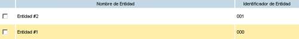

Listado de entidades en las que el usuario tiene permisos de administración

El listado de entidades es reordenable pulsando sobre las cabeceras de la tabla (columnas "Nombre de entidad" e "Identificador de entidad").
Pulsando sobre los datos de una entidad (en cualquiera de las dos columnas anteriores) se accedería a la modificación de datos de la entidad pulsada.
Por cada una de las entidades de nuestro listado podemos realizar las siguientes operaciones: